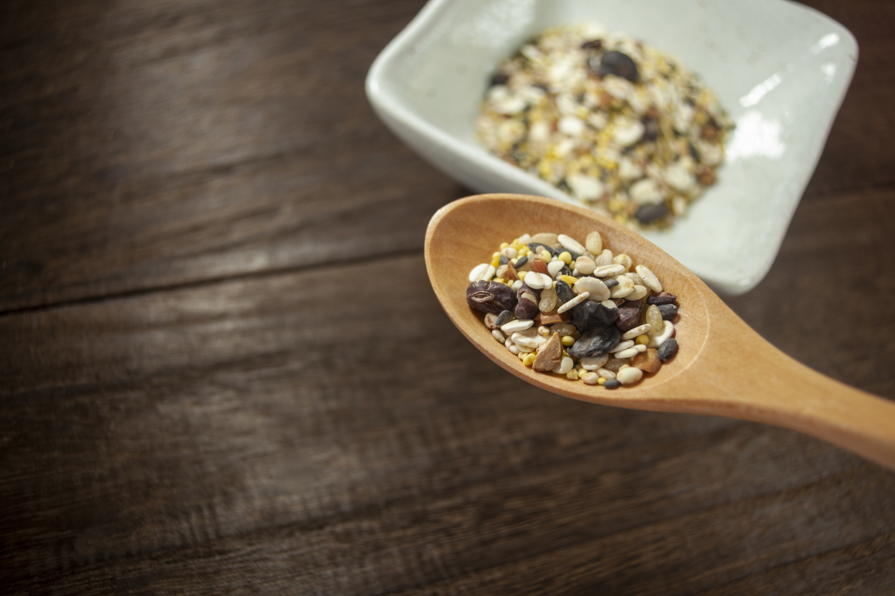
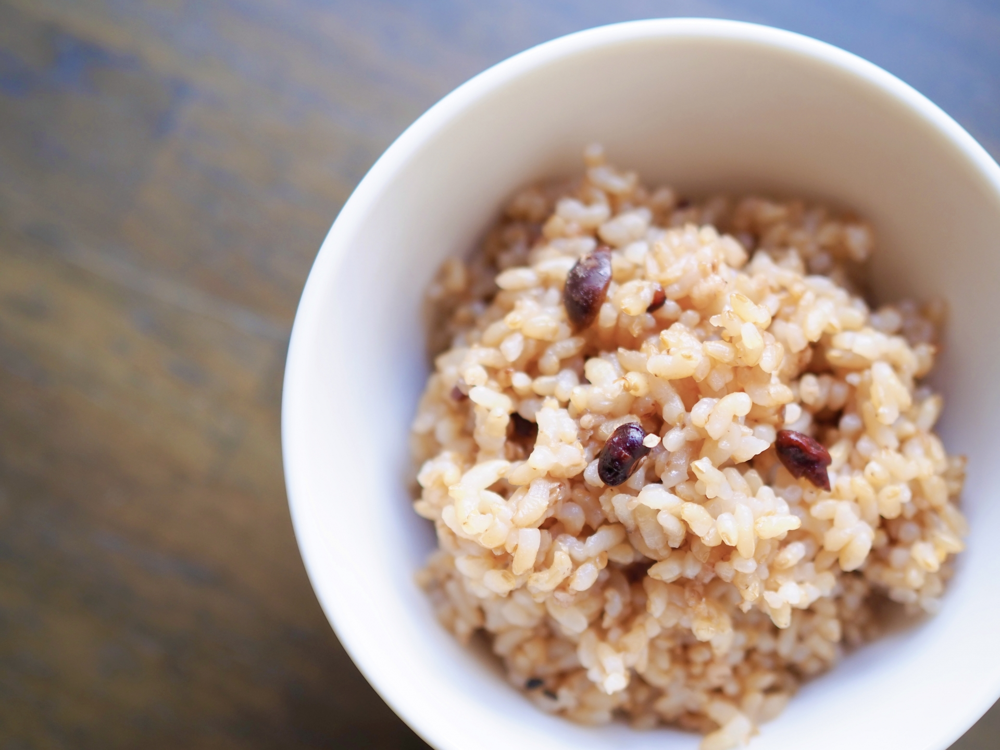
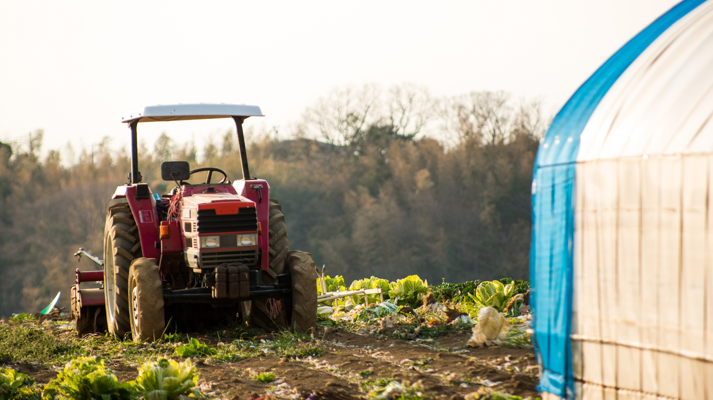

土地の特性を活かしたモノづくり
pursuing the agricultural diversity
who we are
みちのく伊藤ファームについて
文章が入ります文章が入ります文章が入ります文章が入ります文章が入ります文章が入ります文章が入ります文章が入ります文章が入ります文章が入ります文章が入ります
company
mission
活動にかける想い
what we make
私たちが育てる雑穀
文章が入ります文章が入ります文章が入ります文章が入ります文章が入ります文章が入ります文章が入ります文章が入ります文章が入ります文章が入ります文章が入ります

products
what is millet?
雑穀とは
雑穀は古くか基本的な食糧として日本人の食生活を支えてきました。歴史と優れた栄養素を持つ雑穀についてご紹介します。
definition

how we make
生産の流れ
文章が入ります文章が入ります文章が入ります文章が入ります文章が入ります文章が入ります文章が入ります文章が入ります文章が入ります文章が入ります文章が入ります
flow

pick up
お米を販売しています
みちのく伊藤ファームでは、お米の直売を行っています。愛情込めて育てたお米をお楽しみください。
10kg 3,000円、30kg 7,000円（税込）